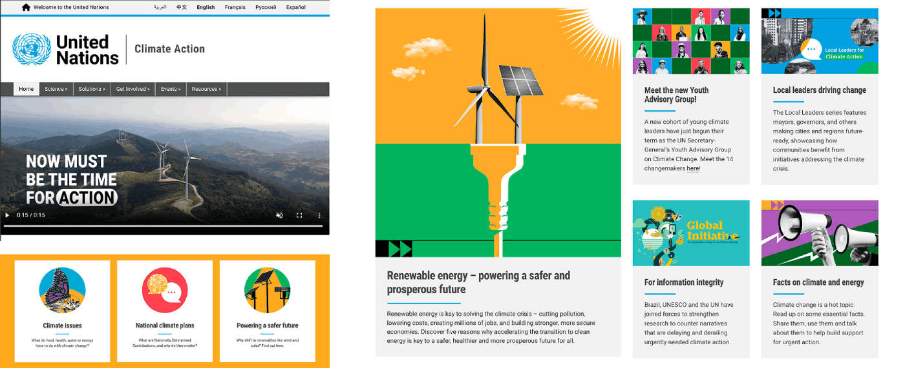
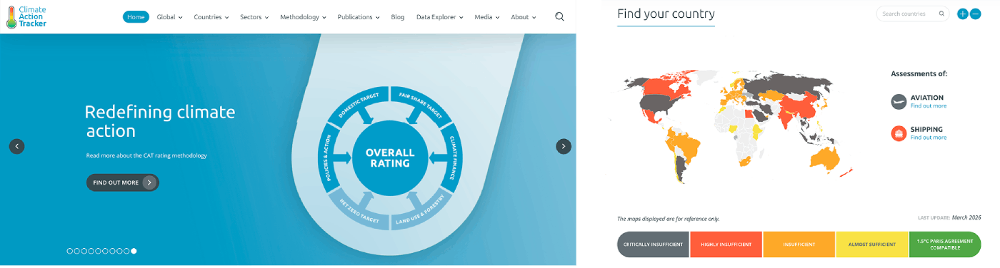

Capstone Research: Comparative Analysis
United Nations : Climate Action

About
The United Nations website about climate action provides content on action taken throughout the world and climate news.
Evaluation
A simple, but strong visual aesthetic allows the content to shine. Blocks of bright colors, and black and white graphics add to the brand identity of this website section and the overall organization. There is a strong visual hierarchy and an organized layout that aids in effortless navigation of the content. The user experience could be enhanced; the current website is too static. More interaction (hover effects, animations, etc.) could increase user engagement.
Visit WebsiteClimate Action Tracker

About
The Climate Action Tracker provides real-time updates on global climate initiatives and their impact.
Evaluation
Another website with a simple and strong visual identity. The use of one primary color, blue, in the design system allows the focus to be on the content. Hover effects on buttons and a scrolling header banner adds dynamism to the website and enhances the user experience. Site architecture is also well established.
Visit Website